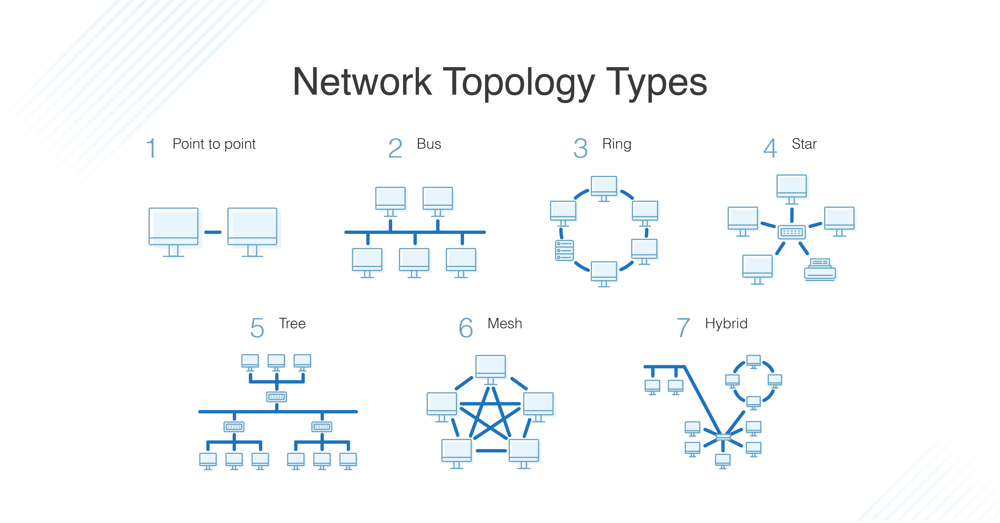

What is a Network?
A network is a set of computers that communicate resources together. An intranet is a form of network where information is being communicated in an organization, private from the public. Alongside an intranet, an extranet is a portion of information released from the intranet to vendors, customers, suppliers etc. The internet, which everyone uses daily, is a global network where information is communicated and where computers all over the world are connected. Bandwidth is a measurement of how much data can be transferred from two different points of a network in a certain amount of time. Throughput is very similar to bandwidth, but it only measures successful message delivery. A half-duplex is where data can be sent and received one at a time over a network, whereas a full duplex allows for two-way sending at the same time. Some advantages of networks are: files can be easily shared, users can communicate easier, and data can be easily backed up. On the other hand, disadvantages include susceptibility to viruses and hackers.
Topologies
The most simple network topology, point-to-point, is a cabled connection between two computers. A bus topology is a form of network topology where every device on the network is connected to a singular main cable line. On the other hand, a ring topology is a form of network where every computer is connected to another computer on each side. A star topology is a form of network where all the computers are connected with a cable to a hub. Alternatively, a mesh topology is a form of network where all computers are connected to each other through a network channel. The tree topology is a form of network where all computers are connected through a hierarchy. Lastly, a hybrid topology is a form of network where at least two different network topologies are combined.

A network hub is a node that transmits and shares data to all computers connected to it either wirelessly or through Ethernet. A switch connects computers on a network by receiving and forwarding information through packet switching. Similarly to a switch, a router sends and receives data on a network. Many modern modems have a router built-in so it can receive internet from the provider and send it throughout the establishment. The CAT5 and CAT6 cables are both Ethernet cables. The CAT5 is older and has mainly become obsolete. The CAT6 cable has identical internet speeds to the former, but with twice the bandwidth. The RJ11 cable is the most used cable when it comes to telecommunications; this includes home phones. On the other hand, the RJ45 cable is used very rarely when it comes to Ethernet.
To make an Ethernet cable, a CAT5 or CAT6 cable will need to be cut and the wires will need to be inserted into a connector. For a straight-through cable, the wires will need to go straight, directly into the same colour part of the connector. For a crossover, cable Pin 2 has to be crossed with Pin 6 and Pin 1 has to be crossed with Pin 3.
A wireless router can be set up through connecting it to the modem with an ethernet cable. After it connects, it is time to set it up using an app that has access to tweaking the router's settings. After it has been tweaked, it is ready to broadcast the Internet.
HTTP, or also known as Hypertext Transfer Protocol, is a protocol that allows for broadcasting hypermedia documents such as HTML. Its main purpose is to allow for communication between servers and browsers. In simple terms, HTTP allows browsers to find websites. FTP, or File Transfer Protocol, is responsible for the transfer of files from a server to a computer. SMTP, or Simple Mail Transfer Protocol, is responsible for the transmission of email throughout the Internet. Telnet on the other hand, is a protocol that is used for emulating a computer network between two computers.
An IP address is a number that is assigned to each machine connected to a network. The importance of this number is so that it can easily identify who is connected to the network. A MAC address on the other hand, is an hardware ID that is also used to identify computers on a network; it is found in WiFi cards and in Ethernet cards. The sub-net mask is what is used to divide an IP address into the network and the host addresses. The Default Gateway IP Address is the IP address of the router that you are connected to.
TCP/IP addressing is a way that enables applications and users to identify a specific host or network with whom to communicate. This allows direct communication between clients and applications.
Connecting to a wireless network is quite simple. For laptops, tablets and phones, there is a setting in networking that allows searching for nearby networks. In order for this to happen, the device must have a WiFi card. Many wireless networks have passwords which are there for security and privacy. The way to connect a printer to a wireless network can be done through the set-up. Printers nowadays are wireless and work by receiving print requests from other machines on the same network. The printer will prompt you to connect to the desired network and once done will allow for requesting prints from devices on the network.
On a Windows 10 computer, file sharing can be enabled through the Network & Internet settings. From there, you can navigate to Sharing Options and turn on File and Printer Sharing.
To set up a peer-to-peer network, begin with navigating to the Control Panel, then system properties, and then change the name of the work-group to the name of the connection between you and your target(s). Restart your computer and then you will have access to sharing files, etc. with a peer or with multiple peers over a private network.